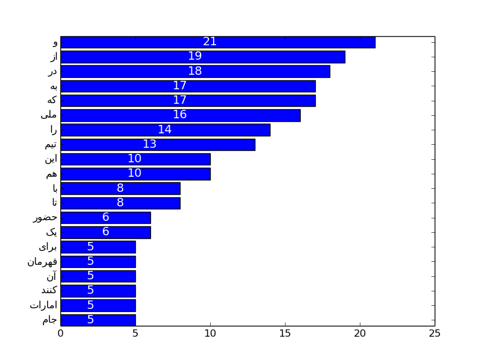
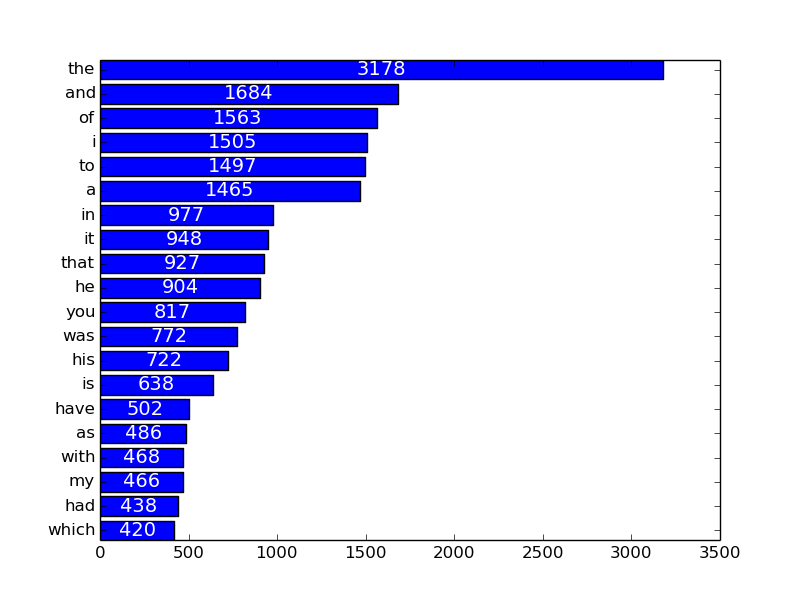

شمارش دفعات تکرار کلمات در یک متن + نمودار
چند وقت پیش به ذهنم رسید که چطور میشه پرکاربردترین کلمات رو توی یک متن پیدا کرد و یک نمودار هم از روی اونها کشید تا راحتتر بشه اونها رو مقایسه کرد.
در ابتدا کدی که نوشتم فقط برای متن های لاتین مناسب بود.تلاش کردم برای متن های فارسی هم این کار رو انجام بدم . چالش برانگیز ترین قسمت این کار حذف کاراکتر های خاص از متن بود مثل !@#$% , ... . برای متن انگلیسی این کار رو قبلا انجام داده بودم اما برای فارسی باید از Unicode استفاده می کردم که تجربه جدیدی بود.در متن فارسی علاوه بر کاراکتر های خاص رایج، تشدید ، تنوین و حرکت حروف هم در صورت وجود باید حذف می شد. برای حذف این کاراکتر ها از Regular Expression استفاده کردم و تکنیکی به اسم Negative lookahead.
این کد رو با پایتون نوشتم چون به نظرم بهترین وسیله برای انجام این کار بود.برای کشیدن گرافها از Matplotlib استفاده شده است که یکی از بهترین و کاربردی ترین کتابخانه های پایتون هست. خالق این کتابخانه از دنیا رفته اما اثر فوق العاده ای از خودش به یادگار گذاشته. برای اینکه جزییات رو بدونید به ادامه مطلب برید.
برای اینکه متن های فارسی در گراف خروجی درست نمایش داده بشه و حروف به صورت جدا،جدا نوشته نشند.از کتابخانه ای به اسم Arabic reshaper استفاده کردم.
نحوه کار کرد کد در یادداشت های داخل کد نوشته شده. توضیحات مختصری در مورد matplotlib هست که در ادامه گفته شده.
همانطور که در کد می بینید تا قسمتی که توسط خط جدا شده است، ما دوتا لیست داریم یکی شامل دفعات تکرار کلمات و دیگری شامل کلمات متناظر آنها.برای کشیدن یک بار چارت افقی در matplotlib به دو تا لیست از اعداد نیاز داریم . که هر لیست برای یکی از محور ها استفاده می شود.
در اینجا نیاز است که یک لیست واسط ایجاد کنیم که شامل ۲۰ عضو است از ۰ تا ۱۹ . نموادر بر این اساس کشیده می شود، بار شماره ۰ مقدارش ۱۰۰، بار شماره ۱ مقدارش ۲۳ و ...
سپس با استفاده از تابع yticks مشخص می کنیم که بار شماره صفر مربوط به عضو شماره صفر از لیست نامها است. این لیست واسط همان y_len هست. اگر می خواهید بزرگترین مقدار در پایین نمودار کشیده شود این لیست رو به صورت صعودی ایجاد کنید یعنی ۰ و ۱ و ۲ و ... و اگر می خواهید بزرگترین بار در بالا قرار داشته باشد آن را به صورت نزولی پر کنید ۱۹ و ۱۸ و ۱۷ و ... .
برای اینکه مقدار دقیق تکرار هر کلمه بر روی بار نوشته شود از text استفاده می کنیم. پارامتر اول مشخص می کند که متن در وسط بار نوشته شود. پارامتر دوم بار مربوطه و پارمتر سوم مقداری که باید نوشته شود.
یک مثال کوچک هم در مورد Negative lookahead:
t(?!s) matches first t in street
این یعنی حرف های t که بعد از آن s نباشد.
در مورد ما:
(?![a-z]). matches ! in Hi!
حرفی که یک حرف بعد آن، بین a-z نیست را پیدا می کند و مقدار حرف بعد را برمی گرداند. برای مثال در مثال بالا i را پیدا می کند و ! را برمی گرداند.
from string import lower import re from matplotlib import pyplot from matplotlib import rcParams from bidi.algorithm import get_display import arabic_reshaper # -*- coding: UTF-8 -*- holmes=open('big.txt',mode='r') # file mored nazaremoon ro ba dastresi read baz mikonim notspecial=re.compile(ur'(?![\u0621-\u063A\u0641-\u064A\u067E\u06A9\u0686\ \u06CC\u0698\u06AF\u0660-\u0669\u200c\s]|[a-z0-9\s]).', re.UNICODE) #regex baraye match kardan har chizi be gheir az tamami character haye farsi va englis i=0 word={} #yek dictionary khali ijad mikonim for line in holmes: line=lower(line) #horof bozorg english ro be koochak tabdil mikonim chon HOME==home line=unicode(line,"utf-8") #khat ro be unicode tabdil mikonim line=notspecial.sub(' ',line) #har chizi ke dar regex match shod ba space jaygozin mikonim line=line.split() # khat ro tabdil be yek list mikonad ke shamel kalamt an khat ast length=len(line) #tedad kalamat ra dar khat hesab mikonad for i in range(0,length): #be ezaye har kalame # if line[i] in word.keys(): #agar kalame ghablan dar dictionary bood word[line[i]] += 1 #yek vahed be tedadesh ezafe koon else: #agar na word[line[i]]=1 #kalame jadid ro be dictionary ezafe koon va tedadesh ro bezar 1 mostused=sorted(word,key=(lambda x: word[x]),reverse=True) #dictionary word ro bar asas tedad tekrar moratab mikone\ #khroji yek list moratab shode az kalamt bar assas tedad tekrar y=range(0,20) mostused_rtl=range(0,20) """ khate bala do ta list jadid ijad mikone y baraye negah dashtan tedad dafat tekrar khate bat baraye negah dashtan halat sahih neveshte shodan kalamat farsi """ for i in range(0,20): y[i]=word[mostused[i]] mostused_rtl[i] = arabic_reshaper.reshape(mostused[i]) mostused_rtl[i]=get_display(mostused_rtl[i]) """ khotot bala 20 kalame aval ro az list moratab shode x mikhanad va tedada tekrar ra dar list y gharar midahad 2khat badi kalamat ra baraye namayesh amade mikoonand""" #=================================================================================# y_len=range(19,-1,-1) rcParams['font.family'] = 'sans-serif' rcParams['font.sans-serif'] = 'DejaVu Sans' pyplot.yticks(y_len,mostused_rtl,ha="right") for i in y_len: pyplot.text(y[i]/int(2),19-i,str(y[i]),fontsize=14,color='white',va="center",ha="center") axes=pyplot.barh(y_len,y,align='center') pyplot.savefig('example01.png')
نمونه خروجی تولید شده بر روی یک متن فارسی و انگلیسی
 این کد هنوز بسیار جای کار داره :
- حذف حروف اضافه
- مشکل در کلماتی مثل it's و its (الان یکی حساب می شوند)
اگر ایده دیگه ای داشتید می تونید تو قسمت نظرات مطرح کنید.
شاد باشید.
دیدگاهها
Comments powered by Disqus